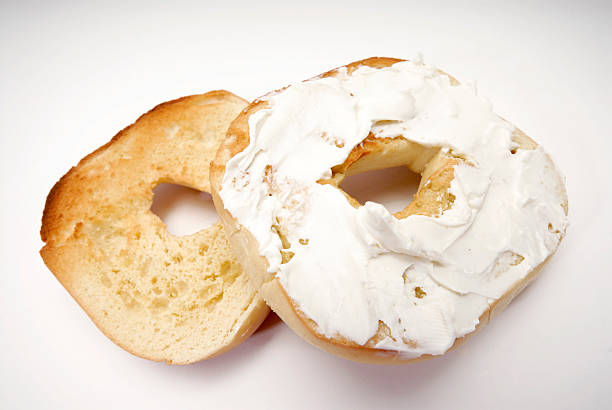

Bagel

Description
Bagels are a staple breakfast dish around the world. With this simple recipe we will learn how to prepare a quick and easy breakfast that the whole family can enjoy.
Ingredients
Steps
- Slice bagel in halves. (or separate if pre-sliced)
- Place bagel halves in toaster on low setting.
- Once toasting is complete, spread a thin layer of cream cheese on the inside surface of each half.
- Optionally, top with additional toppings, such as fresh fruit slices or Everything seasoning.